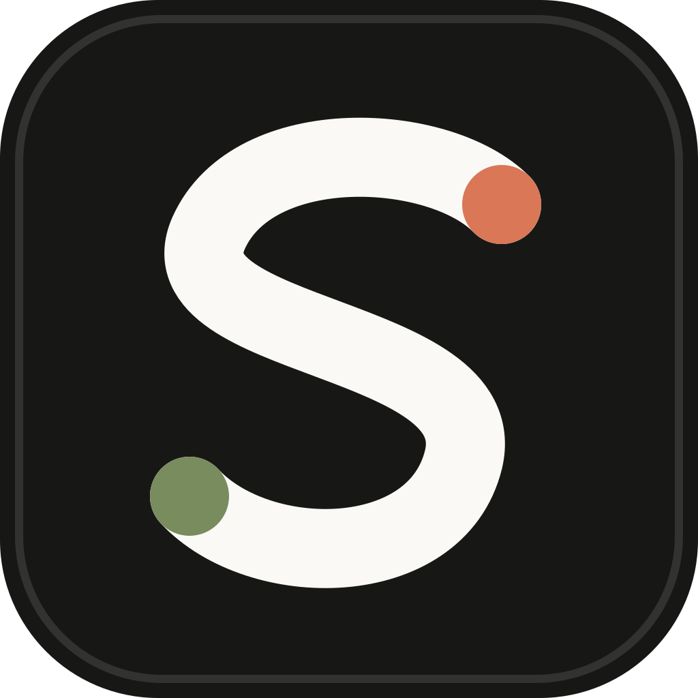
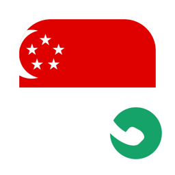
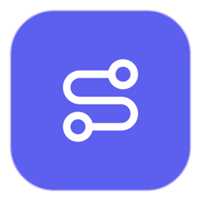
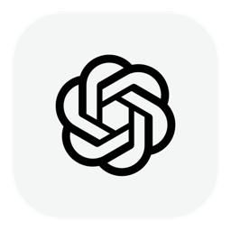
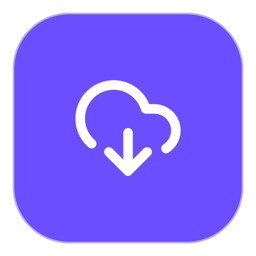
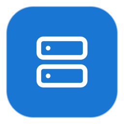

GitHub 公开托管层
控制 DNS、策略组、分流和通话路由，每 24 小时检查更新。

Surge · China Stable · 2026-07-13
iPhone、iPad 与 MacBook 共用的中文操作手册。这里集中说明配置安装、五个实用模块、每个策略组怎么选，以及 Surge 里哪些开关该开、哪些不该开。
Priority / Security first
三台设备都输入这一条 URL。Amy 非托管订阅不要粘贴到 GitHub，也不要写进这条远程配置。
https://raw.githubusercontent.com/cheeseher/Shane-Surge-Config/main/By-Shane.conf
Managed Profile 是远程只读层。下载后应创建 Linked Profile，只在 Linked Profile 里把 AMY_SUBSCRIPTION_URL 占位值替换为新的 Amy 非托管链接。
节点、配置和设备各自只承担一种职责。
控制 DNS、策略组、分流和通话路由，每 24 小时检查更新。
仅保存 Amy 非托管 URL，远程更新不覆盖，也不上传 GitHub。
三端关联同一 Managed Profile，策略名、默认选择和更新节奏一致。
先在 Mac 完成验证，再同步至 iPhone 和 iPad。
AMY_SUBSCRIPTION_URL 替换为新的 Amy 非托管 URL。GitHub 推送新配置后，在 Surge 的 Managed Profile 页面点“立即更新”，或等待 24 小时检查周期。Linked Profile 内的 Amy URL 与本地策略选择不会被远程更新覆盖。
模块与 Managed Profile 相互独立：配置更新不会删除模块。Information Panel 由 Surge 官方标注为 iOS 功能，因此下面五项主要供 iPhone/iPad 使用；Mac 可安装脚本，但不保证出现同样的 Panel 界面。
01 / CONNECTIVITY
分别通过 人工智能、谷歌服务 和 开发服务 检测 ChatGPT、Claude、Grok、Gemini、GitHub，显示延迟、出口地区、最终实际节点和设备时钟。
https://raw.githubusercontent.com/cheeseher/Shane-Surge-Config/main/modules/ai-connectivity.sgmodule
02 / SUBSCRIPTION
通过 DIRECT 从 Amy 读取标准 subscription-userinfo 响应头，显示已用、剩余、总量和到期时间。真实链接只填在本机模块参数中。
https://raw.githubusercontent.com/cheeseher/Shane-Surge-Config/main/modules/subscription-usage.sgmodule
03 / MEDIA
检测 Netflix、YouTube、Disney+、Prime Video、Max、TikTok 的基础连接与延迟。结果只表示网络可达，不冒充片库或账号权益检测。
https://raw.githubusercontent.com/cheeseher/Shane-Surge-Config/main/modules/media-connectivity.sgmodule
04 / CALL HEALTH
读取 Surge 当前及近期（最多约 20 分钟）的真实连接，区分 UDP 与 TCP，显示基础连通性、最终实际节点和通话路径风险。Amy AnyTLS 可能显示 TCP 回退，应在实际通话保持 10–20 秒后刷新。
https://raw.githubusercontent.com/cheeseher/Shane-Surge-Config/main/modules/call-health.sgmodule
05 / MANUAL
在策略页面显示手册入口。点 Panel 的刷新按钮后，Surge 会尝试发送“打开手册”通知；Panel 结果同时显示完整网址，通知被系统拦截时仍可复制打开。
https://raw.githubusercontent.com/cheeseher/Shane-Surge-Config/main/modules/operation-manual.sgmodule
安装后进入 模块 → 订阅流量余额 → 参数设置，在 SUBSCRIPTION_URL 后粘贴完整的 Amy 非托管订阅链接并保存。三台设备分别填写；不要把填好后的参数截图、分享或提交到 GitHub。若服务商没有返回标准流量响应头，模块会明确显示“无法读取”，不会猜测余额。
模块不能代替一场真实双向通话，也不能保证“永不掉线”。它的价值是把以前看不见的协议路径、出口和失败记录变成可读结果，帮助定位单向无声究竟是不是 UDP/分流问题。
若 Panel 内容已经变化，脚本就是正常的。依次开启 iOS 设置 → App（应用）→ Surge → 通知 → 允许通知，以及 Surge → 设置 → 通知 → 显示来自脚本的通知，再刷新一次。模块会播放通知声音；仍无通知时，直接复制 Panel 内显示的手册网址到 Safari。
不用继续找，它不是本项目的必做项，也不保证在每个 iOS 版本或界面出现。Lucid 仍显示水果时，先给“人工智能”组测试本项目的 OpenAI 图标 URL；若能显示，则从最新 Managed Profile 新建 Linked Profile，只重新填写 Amy 非托管订阅链接。旧 Linked Profile 的本地图标覆写不会靠主题切换自动消失。
策略组不是“多开几个代理”，而是把不同业务交给合适的出口。图标采用统一圆角和留白；旗帜代表地区，右下角电话角标代表通话专用线路。
| 策略组 | 它控制什么 | 最佳配置 | 什么时候改 |
|---|---|---|---|
| 香港通话 | 只在需要稳定长连接时，从全部香港节点里选定一个实际节点；不是普通香港上网组。 | 保持自动测试，不要在通话中手动切换。 | 仅当新加坡通话不稳，或实测香港延迟明显更低时选它。 |
 新加坡通话 | 与香港通话相同，但限定新加坡节点；主要作为 Telegram 语音的默认出口。 | 让它自己选择单个节点，通话前更新一次，通话中不更新。 | UDP Relay Test 全部失败，或出现持续丢包、单向无声时换香港通话并重新拨号。 |
| 电报消息 | 控制 Telegram 的消息、文件、登录连接和语音媒体，让它们尽量保持同一出口。 | 默认选“新加坡通话”；三端 Telegram 的 Peer-to-Peer 均设为 Nobody。 | 只有完整结束当前通话后，才切到“香港通话”再重新拨号。 |
| Zoom会议 | 控制 Zoom 登录、语音、视频、共享屏幕和直接 IP 媒体连接。 | 中国大陆先用“香港通话”；Mac 同时开启系统代理和增强模式。 | 香港 Statistics 持续超标时，整组切“新加坡通话”并重新入会；DIRECT 只用于排查。 |
| 策略组 | 最佳选择 | 用途与注意事项 |
|---|---|---|
| 香港节点 | 保持 Smart 自动 | 大陆日常访问通常延迟最低；适合作为默认国际出口，不用于要求固定 IP 的账号业务。 |
| 新加坡节点 | 保持 Smart 自动 | Telegram、PikPak 和东南亚服务的常用备用；延迟通常略高于香港，但 UDP 路径可能更稳。 |
| 日本节点 | 保持 Smart 自动 | Google、Gemini、日本媒体及日区内容；需要固定地区时再使用固定子组。 |
| 美国节点 | 保持 Smart 自动 | AI 与美区媒体优先；从大陆连接延迟较高，不建议作为所有流量的默认出口。 |
| 台湾节点 | 保持 Smart 自动 | 只在明确需要台湾地区出口时使用；图标按项目约定显示中国国旗。 |
| 自动选择 | 仅作故障备用 | 跨全部地区智能选择，可能改变出口国家；不要用于 Telegram 通话、LinkedIn、TikTok 或其他敏感账号会话。 |
 节点选择 | 香港节点 | 未被专门规则命中的日常国际流量；大陆使用优先低延迟。 |
 人工智能 | AI美国固定 | ChatGPT、Claude、Grok 等共用一条真实节点；美国不可用时依次试日本、新加坡，不要在登录过程中频繁换国家。 |
| 谷歌服务 | AI日本固定 | Google、Gemini 与相关登录共用一条真实节点，避免 Smart 按域名切换出口。 |
| 国际媒体 | 美国节点 | Netflix、YouTube 与美区流媒体优先；日区内容改日本，新加坡/香港适合一般播放但不保证片库。 |
| 领英 | 固定香港或新加坡实际节点 | 登录后减少 IP 漂移；不要选会在后台自动换线的 Smart 组，除非当前实际节点已经失效。 |
| TikTok日本固定 | 手选一条真实日本节点 | 用于日区 TikTok；选好后保持固定，不测速、不在使用过程中更换实际节点。 |
| TikTok美国固定 | 手选一条真实美国节点 | 用于美区 TikTok；与日本固定组相同，关键是同一会话不漂移出口。 |
| TikTok | TikTok日本固定 | 在日本与美国两个固定子组之间选择；这里只做 IP 分流，不安装修改版 App、不做 MITM。 |
 开发服务 | 香港节点 | GitHub、终端和常用开发资源低延迟访问。 |
 PikPak | 新加坡节点 | 优先新加坡，速度或登录异常时试香港；下载过程中不要切换节点。 |
| 苹果服务 | DIRECT | 美区 Apple ID 不代表所有 Apple 流量都要代理。仅在明确的美区内容访问失败时临时选美国节点。 |
| 微软服务 | DIRECT | Windows、Office、Teams 登录优先直连；失败时再试香港节点，避免日常更新绕路。 |
 群晖办公 | DIRECT | 本地 NAS 和公司内网优先直连。只有远程服务明确需要时才切节点，并先确认不会破坏内网访问。 |
 加密货币 | DIRECT | 不自动伪装地区或切换 IP；仅在平台允许的合规使用地区操作。 |
下面是这套配置的基准状态。先照表设置，再排障；不要为了“速度更快”同时打开多个实验功能。
Surge 主开关开启；iOS 的增强接管由系统 VPN 自动完成。不要同时运行其他 VPN。MITM 与局域网共享保持关闭；Amy 订阅节点的 TFO 已由配置强制关闭。
开启 Set as System Proxy；需要 Telegram、Zoom、终端与直接 IP/UDP 完整接管时，同时开启 Enhanced Mode。
external-policy-modifier="tfo=false" 覆盖订阅节点，不需要在三台设备逐条修改。block-quic=all-proxy，让不稳定的代理 UDP/QUIC 回退到 HTTPS/TCP；不需要再叠加“全局禁 QUIC”模块。ipv6=false、ipv6-vif=off。在 Amy 节点和中国电信路径完成双栈验证前不要改开，避免 IPv4/IPv6 出口不一致。目标是让消息、建连和通话媒体使用同一个实际节点，并避免 P2P 对端 IP 落入其他策略。
电报消息 → 新加坡通话。这是一个低频评估的单节点出口；通话期间不要手动测速、更新节点或切换策略。
Settings → Privacy and Security → Calls → Peer-to-Peer → Nobody。关闭 P2P 后通话经 Telegram 中继，隐藏双方 IP，但可能轻微增加延迟。
电报消息，没有 DIRECT 或 FINAL 异常分流。| 现象 | 先检查 | 处理 |
|---|---|---|
| 呼叫一直连接中或很快断开 | UDP Relay Test | 切到另一个已通过 UDP 的香港/新加坡通话组；都失败则联系 Amy，规则无法补出 UDP 能力。 |
| 偶发单向无声 | 三端 P2P 是否均为 Nobody | 确认双方 Telegram 设置；检查通话期间是否切节点、更新订阅或在 Wi‑Fi/蜂窝之间切换。 |
| Mac 正常，iPhone/iPad 不稳 | iOS 当前配置与 VPN 状态 | 确认选中 Linked Profile、没有另一个 VPN，并在 Surge 请求日志确认 Telegram 没落入 FINAL。 |
| Wi‑Fi 正常，蜂窝失败 | 中国电信 UDP 与节点路径 | 用同一节点重复 UDP 测试；不要用自动切组掩盖运营商路径差异。 |
整个会议统一走 Zoom会议；中国大陆默认“香港通话”。直连可能可以入会，但无法开启或稳定维持共享屏幕，因此 DIRECT 只保留为诊断备选。
旧配置可能让登录 TCP、媒体 UDP 与直接 IP 连接走不同出口。新配置用 Mac 进程规则、Zoom 域名和官方 Meetings/Webinars IP 范围，让语音、视频、共享屏幕与 TURN 连接进入同一策略组。
Set as System Proxy 与 Enhanced Mode，确保 Zoom 的 UDP 与直接 IP 媒体连接被接管。Zoom会议 保持“香港通话”，确认已落到一条真实香港节点；关闭其他 VPN、代理和可能接管网络的安全软件。Zoom会议。会议中点击视频按钮旁的箭头 → Video Settings → Statistics。Zoom 官方建议以下三项控制在门槛内：
| 现象 | 判断 | 处理 |
|---|---|---|
| 投屏后对方听不到共享内容 | 通常不是网络分流 | 重新共享并勾选 Share sound；若只是麦克风无声，再检查 Zoom 输入设备与系统麦克风权限。 |
| 双方偶发听不到彼此 | 先看 Statistics 与通话健康模块 | 若延迟、抖动或丢包超标，把整个 Zoom会议 从香港通话切到新加坡通话后重新入会；不要只改单条 UDP 规则。 |
| 共享屏幕时明显卡顿 | 上行带宽或 Wi‑Fi 干扰 | 靠近路由器、切 5/6 GHz 或有线网络，暂停云同步；不要边开会边测速。 |
| 香港、新加坡都卡顿 | 节点拥塞或 AnyTLS TCP 回退 | 逐条更换实际节点并复测。DIRECT 只用于判断是否为代理路径问题，不作为大陆共享屏幕方案。 |
已确认与待回国确认的事项分开记录。
域名分流、Smart Group 和轻量广告拦截不需要 MITM。大量 App 有证书锁定，全局信任自签 CA 只会增加兼容性和安全风险。
Surge 无法匿名访问私有 Raw 文件，而将现有 MyProxy 改为公开会暴露历史提交。新的公开仓库只发布已扫描的 Managed Profile，不包含 Amy URL 或个人化历史。
iOS 27 和 macOS 27 都是测试系统。若出现切换 Wi-Fi/蜂窝后断网、发热或网络扩展异常，需用同一配置与稳定系统交叉测试，不将所有问题归因于规则。
默认 DIRECT。本配置不判断你的居住地、账户资格或平台条款，也不建议用切换出口的方式规避地区限制。
模块安装与参数依据 Module；动态卡片依据 Information Panel；Mac 接管依据 Enhanced Mode；固定 AI 出口依据 Smart Group 指南；协议与 UDP 能力依据 代理协议说明；AI 域名依据 OpenAI 网络建议；AnyTLS 与关闭 TFO 依据 Amy 官方公告。本页只把这些能力组合成适合当前三端和 Amy 节点的操作顺序。